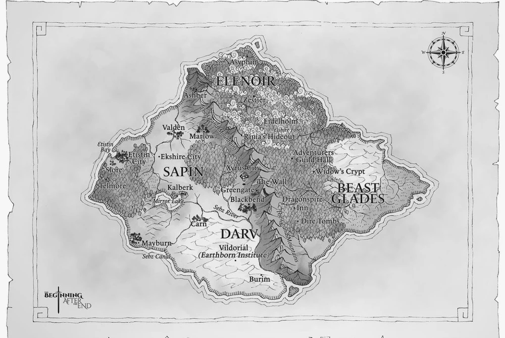
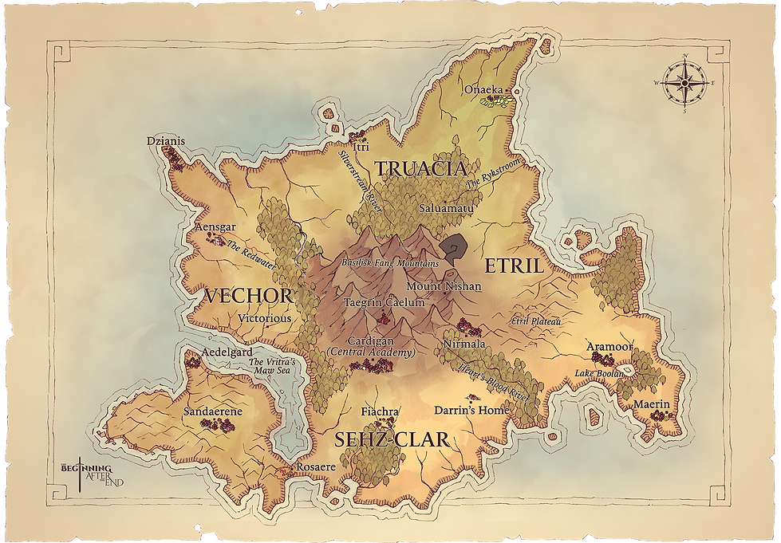
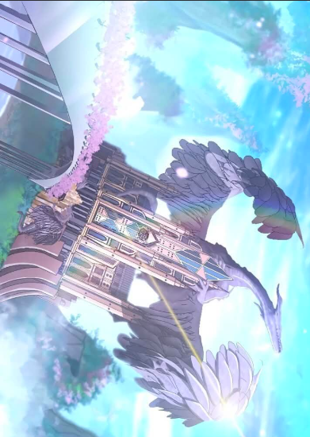

Dicathen
Lar de humanos, elfos e anões. É o continente onde Arthur cresce e inicia sua jornada.

Lar de humanos, elfos e anões. É o continente onde Arthur cresce e inicia sua jornada.

Dominado pelos Vritra, possui uma sociedade baseada em castas e grande domínio da magia.

Reino dos Asuras, seres extremamente poderosos que influenciam o destino do mundo.
Versáteis e numerosos.
Especialistas em magia e conexão com a natureza.
Reconhecidos por sua resistência e habilidade em mineração.
Seres divinos com poder muito além dos mortais.
Fonte de energia utilizada pela maioria dos magos para conjurar feitiços e fortalecer seus corpos.
Energia rara e extremamente poderosa, manipulada por poucos indivíduos e capaz de alterar a realidade.